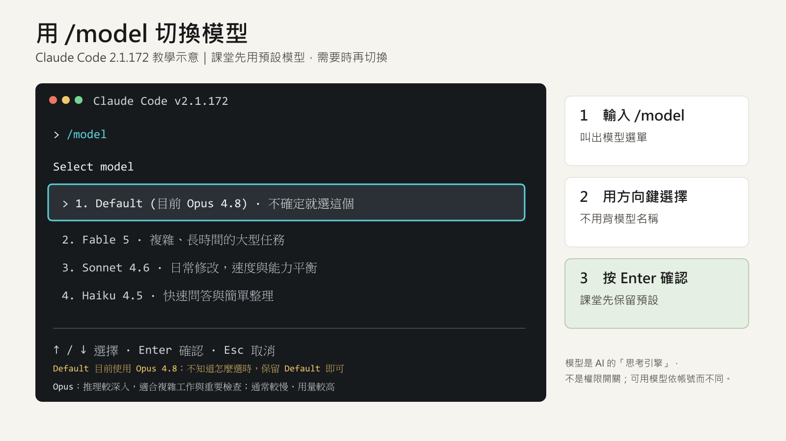
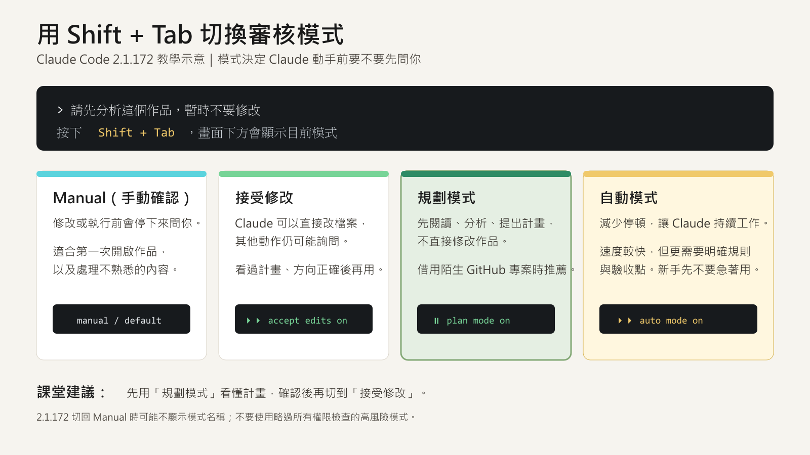
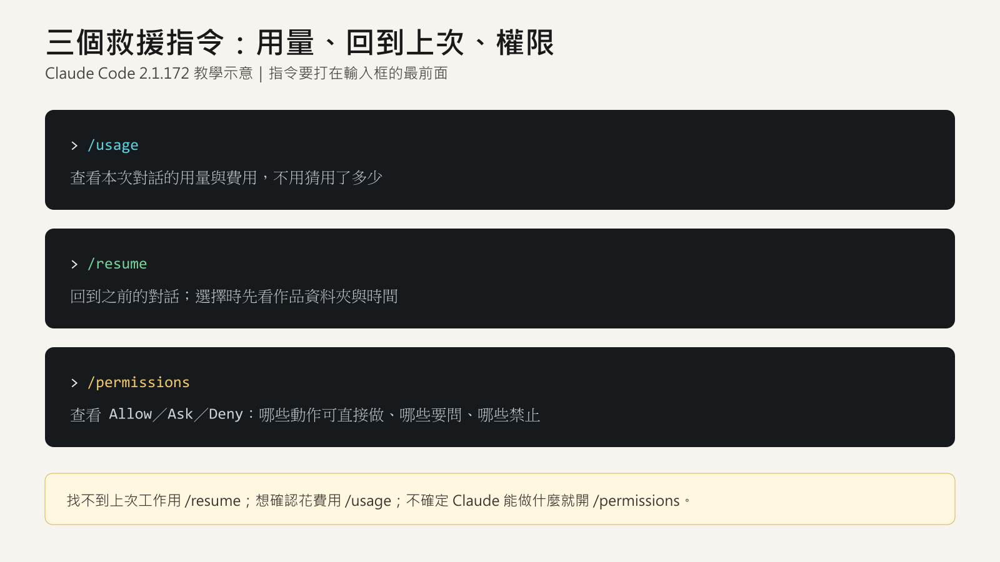

3 · Billy 場 · 借力／GitHub／雲端
3-4 · 實作：把你的 Google Sheet 搬進真正的資料庫
四個階段、四段提示詞，照順序複製貼上就好。每段都會停下來確認，再進到下一段。
🛠️
動手題: 把你上週用 Google Sheet 做的東西，搬進真正的資料庫——全程有安全步驟（先分析別亂改 → 先搬少量回報筆數 → 動大改前先問）。這正好用到 Hailey 的「交辦清單」：放手前先講清楚、停止點放在不可逆動作前。
🔗
Billy 的專案（站在巨人肩膀上）: 下載這個 repo，先讀完 README ＋ 任務說明，再照著做 → github.com/billychu-mectecs/workshop6-sheet-to-db
開始前：先認識 Claude 的模型與審核模式
模型決定 AI 用哪一種思考方式；審核模式決定它動手前要不要先問你。兩件事不要混在一起。

Default跟隨 Claude 建議的預設模型。目前教學畫面使用 Opus 4.8；不確定時就保留 Default。
Opus推理較深入，適合複雜工作、重要檢查與需要反覆思考的任務；通常較慢、用量較高。
Fable適合複雜、長時間或需要持續推進的大型任務。
Sonnet適合日常修改，在速度與處理能力之間取得平衡。
Haiku適合快速問答、簡單整理與較短的工作。
每個帳號看到的模型可能不同。模型影響處理方式；審核模式才決定 Claude 動手前是否詢問。


1️⃣
第一階段 · 先讓上週作品正常開啟 —— 把下面整段複製，貼給 Claude Code：
第一階段提示詞
我現在開啟的是上週完成的作品。請先不要改功能，也不要接資料庫。 請讀取目前資料夾的 README（作品說明）、啟動檔（讓作品開始運作的檔案）與主要程式，依序完成： 1. 確認這是一個可執行的既有作品；若不像現有專案，請停止並提醒我選對資料夾。 2. 使用這個專案原本的方式啟動。若缺少必要套件，先用白話說明，再安全地補齊。 3. 若原本的啟動位置無法使用，請自動改用可用位置，不要叫我處理技術細節。 4. 把只在這台電腦開啟的網址（本機網址）告訴我。 5. 請我親自使用假姓名新增一筆飲料訂單，確認庫存減少；再取消這筆訂單，確認庫存恢復。一次告訴我一個要點的按鈕，不要代替我操作。 不要部署到網路、不要重做畫面、不要更換資料來源，也不要先修改程式功能。 畫面能開啟，而且新增與取消測試都成功後就停下來，整理你做了什麼，等我回答「可以」再進下一段。
2️⃣
第二階段 · 用 Git 留下改造前存檔點 —— 第一階段完成後，把下面整段複製，貼給 Claude Code：
第二階段提示詞
現在作品已能正常開啟。請先用 Git 留下一個「改造前存檔點」，暫時不要接資料庫。 請依序完成： 1. 檢查目前是否已有 Git 修改紀錄；沒有才建立。 2. 檢查 .gitignore（不納入版本的檔案清單），排除 .env（秘密設定檔）、API key／Token／憑證（系統使用的秘密鑰匙）、密碼、真實資料與大型產生檔。 3. 用白話告訴我哪些檔案會保存、哪些會排除；若發現疑似秘密或公司資料，先停止並提醒我。 4. 確認安全後，在這台電腦建立一個存檔版本（本機版本），修改紀錄標題寫「改接資料庫前」。 5. 告訴我：Git 像存檔，之後可以用它比較 AI 修改前後的差異。 不要建立公開 GitHub 專案、不要上傳，也不要覆蓋網路上原本的作品（遠端內容）。 完成後停下來回報，等我回答「可以」再進下一段。
3️⃣
第三階段 · 先分析 Sheet 怎麼搬，先不要改 —— Git 存檔完成後，把下面整段複製，貼給 Claude Code：
第三階段提示詞
請閱讀講師指定的 Workshop 6 GitHub 專案： https://github.com/billychu-mectecs/workshop6-sheet-to-db 我目前開啟的資料夾是上週完成的作品，這才是修改目標。請把講師的 GitHub 專案（Repo）下載到另一個暫存參考資料夾，讀完 README.md、CLAUDE.md、docs/connection-flow.md 與 prompts/04-migrate-and-verify.md。這些是給 AI 看的規則，我不需要自己打開。 不要執行講師範例、不要用範例覆蓋我的作品，也不要修改暫存參考資料。先請 AI 檢查這個專案是否有可疑下載、外傳資料或索取帳密的行為。 依照課堂規則，只確認本機的安全資料庫連線是否完整，不要顯示任何實際值，也不要詢問我的部門、工號、主機、帳號、密碼或連線字串。 先不要修改。請用繁體中文與白話告訴我： 1. 我的作品與暫存參考專案分別在哪裡。 2. 我的作品目前怎麼讀寫 Google Sheet。 3. 哪些資料會持續累積、需要多人使用，因此準備搬到資料庫。 4. 哪些既有畫面、文字與功能會保留。 5. 搬移前需要確認的內容，至少包含飲料名稱、庫存數量、訂購人、同一筆訂單是否重複，以及庫存不足與取消訂單時該怎麼處理。 6. 會如何少量測試，以及完成後如何驗證。 一次只問我一個必要問題。最後請用勾選清單讓我確認「資料有沒有漏、庫存規則對不對、取消後會不會恢復、重跑會不會重複」。提出完整計畫後停下來，等我回答「可以」再進下一段。
4️⃣
第四階段 · 搬移、驗證，再看 AI 改了什麼 —— 確認第三階段計畫正確後，把下面整段複製，貼給 Claude Code：
第四階段提示詞
我已確認搬移計畫。請依第 3 段下載的「講師暫存參考資料夾」內 README.md、CLAUDE.md 與 docs/connection-flow.md 開始執行；不要誤讀成我作品資料夾裡的同名文件。 請依序完成： 1. 保留原始 Google Sheet 與現有畫面，不直接刪除或覆蓋。 2. 所有資料庫操作都使用已安裝的安全連線；不要詢問或顯示帳密，也不要寫入秘密設定檔（.env）、程式、Git 或系統記錄（log）。 3. 只操作安全連線核發給我的個人練習資料區；範圍不明或權限不符就停止並請講師協助。 4. 建立可重複執行的資料庫改造紀錄（方便以後重做或交接），以及白話資料字典（欄位與規則說明）。 5. 先用少量假資料測試，回報成功、重複與失敗筆數，然後停下來。提醒我必須在同一個對話回答「可以」，你才能繼續第 6 步。 我確認少量測試後，再繼續： 6. 搬入完整練習資料，不製造重複紀錄。 7. 讓我實際測試新增訂單、售完阻擋、取消訂單，以及重開作品後資料仍存在。 8. 核對搬移前後筆數、重複筆數、失敗筆數與主要工作規則。 9. 使用 Git 比較「改造前存檔點」與現在，白話說明 AI 改了哪些檔案與功能。 10. 再掃描一次秘密與真實資料；確認安全且測試通過後，建立「完成資料庫改接」的本機版本。 大量修改、刪除、清空資料或公開上傳前，一定先問我。未經我確認，不要上傳 GitHub。 完成後用「改了什麼、怎麼測、結果如何、還需要誰協助」四點回報。
完成後要上傳，先準備 GitHub 帳號
GitHub 是放程式、說明與修改紀錄的地方。先建立帳號並驗證信箱；上傳公司作品時，一律先確認內容安全與公開範圍。
前往 GitHub 註冊頁 ↗1 建立帳號輸入信箱、帳號名稱與密碼；已有帳號可直接登入。
2 驗證信箱到信箱完成驗證，否則可能無法建立專案。
3 加上兩步驟驗證多一層登入保護，避免帳號被盜用。
建立第一個 Private 專案
按右上角「＋」選 New repository，選擇擁有者並輸入名稱。Visibility 請先選 Private，再按 Create repository。


🔒
上傳前先檢查：不要放入 .env、API key、密碼、Token、公司機密、個資或真實營運資料。Private 不是免檢查，仍要先讓 AI 掃描，再由人確認。
🔒
資料庫存取檔（install-db-access.bat）請在會前會就裝好 → 見 1-7。每人一支、連公司內部資料庫，由 4A 在公司內部資料夾發放。不放這頁、不放裝機精靈、不放公開網路（內網基建，資安）。上課當天才發密碼。
4A AI 工作坊 · 第三堂 Billy 場 | 3-4 實作